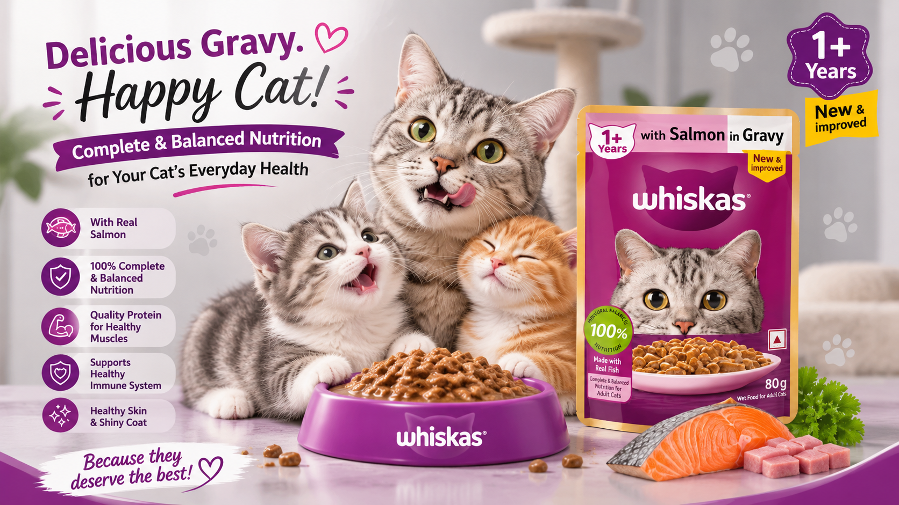

01 / NUTRISINutrisi Lengkap
Kucing mempunyai kebutuhan nutrisi yang berbeda dari manusia. Mereka membutuhkan 4 kali lebih banyak protein, 2 kali lebih banyak Vitamin A, serta Taurin untuk melengkapi kebutuhan alaminya.
Karena itu, WHISKAS® merancang resep 100% lengkap dan seimbang untuk memenuhi kebutuhan kucing dalam berbagai tahap kehidupan.
info nutrisi →